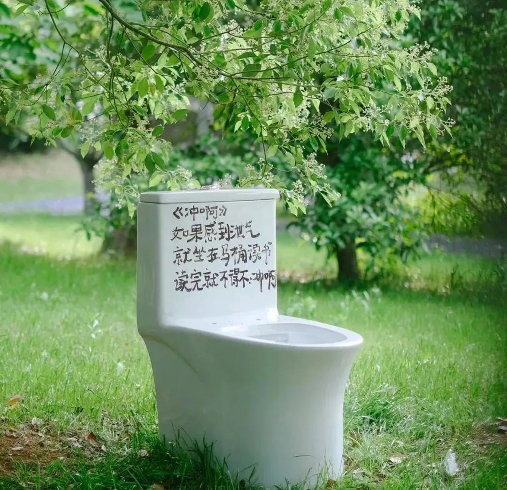

因为不知道自己能不能录取，所以在2022的年终总结里，我提到“2022最大的成就感，来源于完成了一项耗时挺久的计划，并且对结果不那么患得患失”，但并未言明这个计划是什么。现在终于可以跟大家分享录取的喜悦了：
关于读研究生这件事情，算起来在心里已经扎下了3年：
- 2020年，学了半年的传播学，慎重思考后选择放弃读这个专业；
- 2021年，因为膝盖的意外做手术、拄拐，还加入了新公司，所以选择先养伤+适应新环境与投入工作；
- 2022年，终于在思想斗争后还是备考了半年，好在，顺利达成目标。
现在写下这番总结，以纪念那些深夜伏案的日子。
01 读书是奢侈的消费
关于为什么读MBA
三年前，我曾与一位跨年龄层的朋友交流，我表达了自己对“越往前走发现身边的女性 role model 越少”的困惑，以及继续读书深造的顾虑。当时他的一句话——“读书，是奢侈的消费”，让我印象深刻。
如今也确有实感，这种“奢侈”，不仅在于物质意义上的学费，更在于逐渐靠近中年后，在职业繁忙、俗事缠身中，还能抽出来的心力。
虽然现在人们也常说“降低自我标准，尝试松弛人生”。但如果不曾争取，我估计自己会一直延续年少浑浑噩噩没读研的遗憾，并且骗自己说，这只是选择不同。而勇敢的做法是：去体验了，才知道自己到底想要什么，如果体验后发现不喜欢，那么可以选择退出。若仅仅畏难，不行动，那么便一无所获。拥有的，才叫选择，没能拥有的，那叫放弃幻想。
我想现在的自己，要远比年少的时候勇敢很多，敢于面对自己的渴望与幻想，敢于走出舒适区，敢于做一些也许性价比不高的“消费”。也逐渐体验到了，有选择，更自由。
02 痛并快乐着
关于自我怀疑与精神资源
考研，真的是一个艰难的过程。相信每一个考研人都曾经历过在“怀疑自己”和“相信自己”之间反复横跳的阶段。去年有很多次，我都很怀疑自己，感觉自己很废物。白天上班，晚上20点下班后，到家洗漱完已经21-22点了，还要重振精神，上课、做题，时间长了，强烈的枯燥感、身体压力和精神焦虑都很容易击垮自己。早起背单词，更是一个巨大的难关。
现在想来，三年前工作之余一个半月突击备考 PMP 的成功经验，是给予我可以承受这种“痛并快乐着”经历的精神资源。正是那种知道自己只要坚持下去肯定会有所收获的念头，支撑着自己走到现在。而现在这次挑战自己的成功经验，也会成为未来面对难关时支撑自己坚持下去的重要精神资源，给自己带来勇气和自信（害，给自己喂下一碗浓烈鸡汤）。

“每次成功都会带来数之不尽的其他成功”——如此循环，所谓强大的意志也就塑造起来了。这种精神资源，是外界无法剥夺的虚拟资产（这是实话）。
03 你不能什么都想要
关于贪欲与精神带宽
2022年的下半年，我一方面想要备考成功，另一方面想要工作维持出色（就是贪），所以这时候就出现了“权衡式思维”。所谓的权衡式思维（trade-off thinking）是由“稀缺”心态引发的一种思维方式。在“稀缺”心态下，因为所有未被满足的需要俘获了我们的大脑，以致于我们开始对之念念不忘，然后产生决策难题。
人的精力带宽是有限的，我必须做出选择，只去专注一件事情，否则两边都做不好。因为，带宽 bandwidth 就是心智的容量，心智的容量影响着两种能力：认知能力和执行控制力。“稀缺”心态会降低带宽的容量，致使我们缺乏洞察力和前瞻性，还会减弱执行控制力。
“稀缺”心态不仅仅会令我们入不敷出，不知如何分配资源，还会让我们在生活的其他方面手足无措。“稀缺”会使人变笨，变得更加冲动。然后人不得不在认知能力和执行控制力被减弱的情况下依靠更为有限的脑力去勉强度日。生活就这样变得举步维艰起来。
我十分警惕这一点，告诉自己不可能两头兼顾，焦虑之后，我努力说服自己，一个阶段只能集中精力去顾一件事情，否则两头的效果都会很差。所以我选择了：备考半年，工作就正常进行即可，结果听天由命。并且在刚开始的两个月里，努力控制自己不要在非工作时间里投入心力研究工作如何精进，对那种惯性做对抗。我想，如果仅仅因为这几个月的减少投入就出现工作表现大幅下滑，那说明自己的专业能力也是差强人意的吧！
这样给自己做完心理建设后，十一假期后的备考状态稳定了很多，后来12月考研成绩远高于自己的预期，顺利拟录取。年终的工作综合反馈竟然也很积极（总之就是意外圆满的2022啊）。
04 文凭通胀下的“兴奋剂”
关于读MBA有什么用
辅导机构的老师和备考的朋友都曾说过，MBA 是锦上添花，不是雪中送炭。
我很赞同，并且还认为，MBA 是文凭通胀下的“兴奋剂”，也是经济资源和文化产品的互动方式。
也就是说，如果一个人在其他方面不思进取，仅仅靠一个研究生文凭，就想逆天改命，那多半是不可能的。近年来，随着 MBA 的改革（统一联考、双证）与年轻化趋势，再加上结识的 MBA 朋友，就能够很明显地发现，通常选择去读 MBA 且能够坚持下来的，往往是多方位思变与精进的那种人，也就是说 MBA 只是 ta 提升实力、发展事业抑或谋得其他目标的方式之一而已。
花几十万学费和两三年的时间，牺牲休息日去上课，完成考试、各类 Workshop 和赛事活动，ta 们的旺盛精力仿佛服用了 MBA 这枚“兴奋剂”，最终往往也能实现一些些进步或改变，但**这到底是“兴奋剂”的作用，还是 ta 原本的多年“训练”和“运动基础”的作用？**我们很难界定。
再来谈谈 MBA 作为经济资源和文化产品的互动方式。
企业管理咨询和投资领域中好像有一个共识，那就是中国尚未形成如美国社会那样的职业经理人群体，这影响着企业信息化、数字化的发展过程，也影响着企业整体的经营管理水平。虽然全球产业链分工下的中国现状可能还无法在短期内有所改变，但是希望80、90后乃至更年轻一代的职业经理人的崛起，会带来一些情况的改善。
这背后少不了紧跟时代要求的 MBA 教育。具备一定经济资源的新生代职业经理人和预备军，也需要通过 MBA 教育（或其他方式）提升自己的管理素养与能力。因此经济资源与文化产品的互动愈发频繁，也正是在这样的文化生产过程中，大家可以结成联盟来取得彼此需要的东西。
结 语
总结到现在，不得不承认，在短期内，我还是倾向于做出偏“工具理性”的决定，所以没有选择直接去读个社会学或人类学。
但没关系，先体验了再说。仅当作，送给自己的一份礼物也很好。